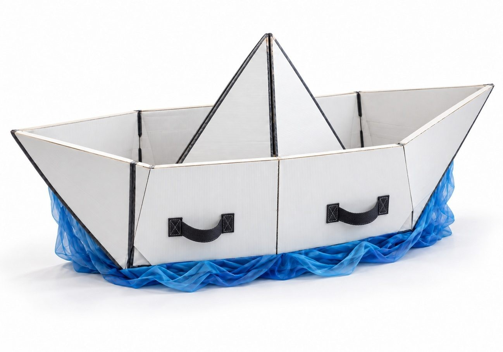

Referencia de los TDR01 / UTILERÍA ESCÉNICADisponible
Barco de papel
Una forma de origami de cuatro metros. Dos mitades, agarres acolchados y todos los encuentros a la vista.
- Montaje y separación en 3D
- Guía visual + planos técnicos R08
- Descarga GLB, OBJ y STL a escala 1:1